Log a service, oil change or repair
In the office app, press Help and type log a service, oil change or repair
: the tour plays on your own screen, with your own data.
-
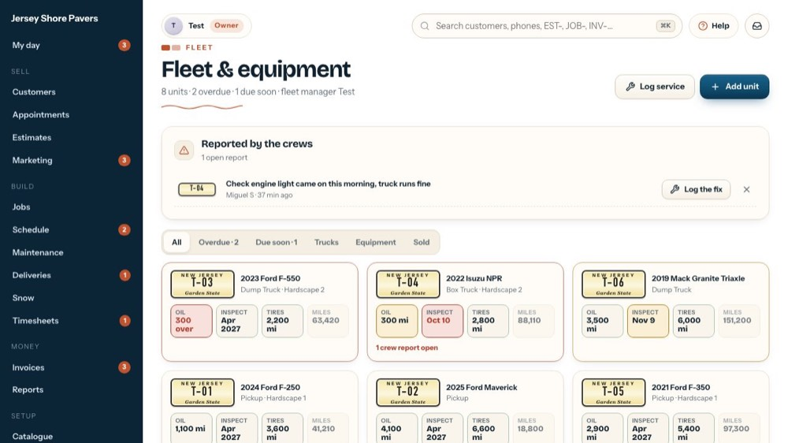
1Log service
Opens the service form.
-
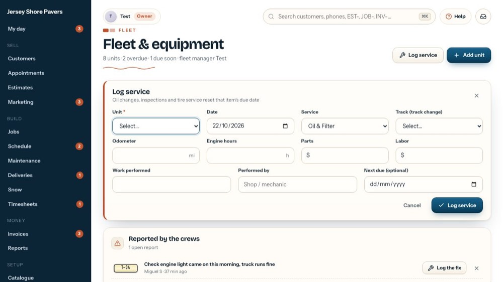
2Unit
Pick the truck or machine.
-
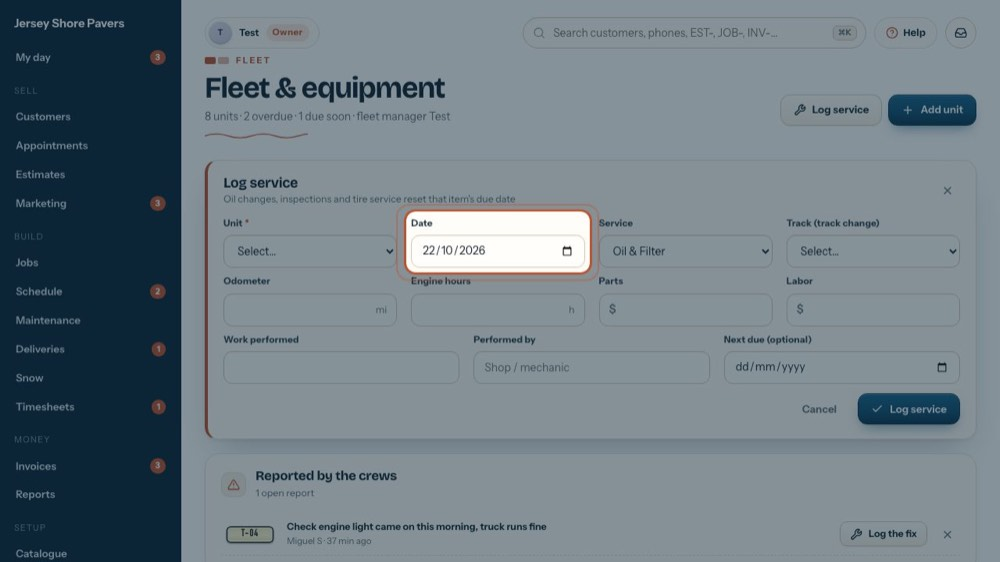
3Date
When it was done. It starts at today.
-
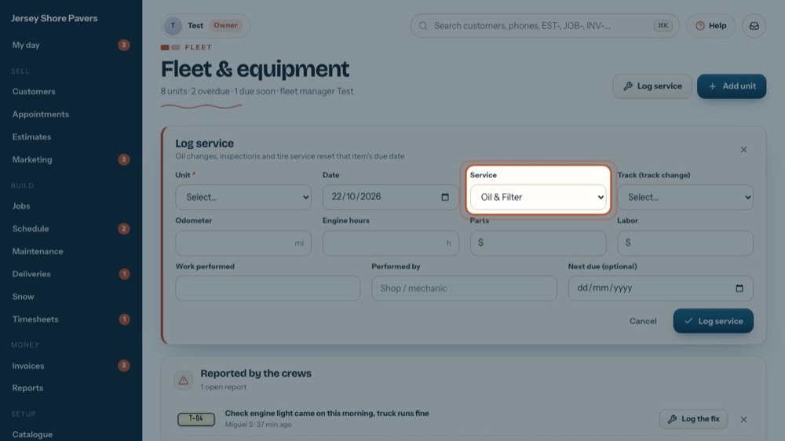
4Service
Oil & Filter, Tire Rotation, Brakes, Annual Inspection, Repair, Seasonal, Track Replacement or Other. Oil, inspection and tire services reset that item's due date.
-
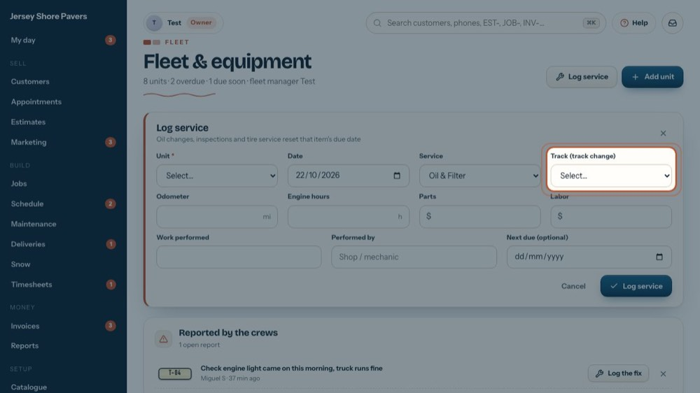
5Which track
For a track replacement: Left, Right or Both. It must be filled in for that service.
-
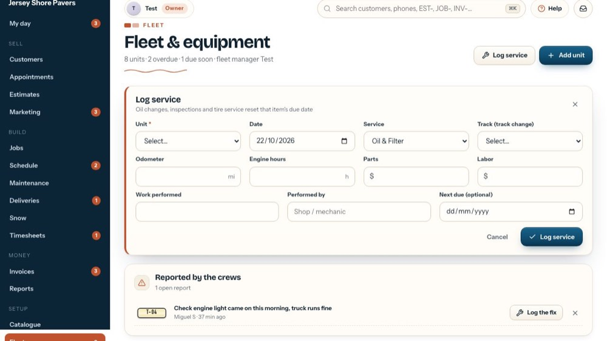
6Miles or hours
The odometer for a truck, or the engine hours for a machine, at the service. Opened from a unit, they start at its last reading.
-
 7
7Parts and labor
What the parts and the labor cost. Together they make the cost in the service log and the unit's maintenance cost.
-
 8
8Work performed
What was done, in a few words.
-
 9
9Performed by
The shop or the mechanic.
-
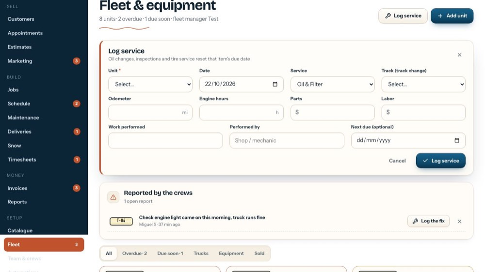
10Next due
Optional: a date for the next one.
-
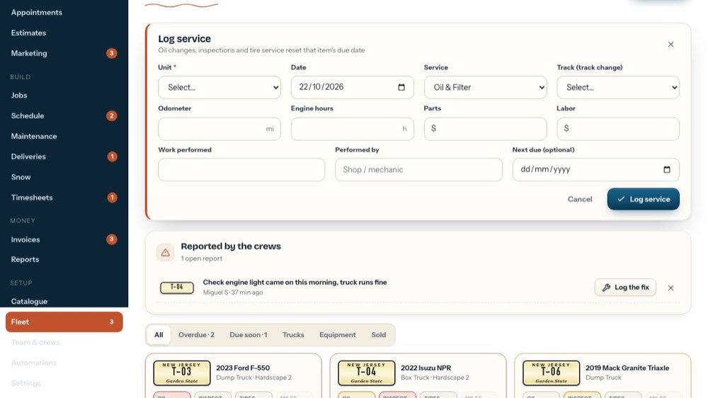
11Log service
Saves it and moves the due dates on.
-
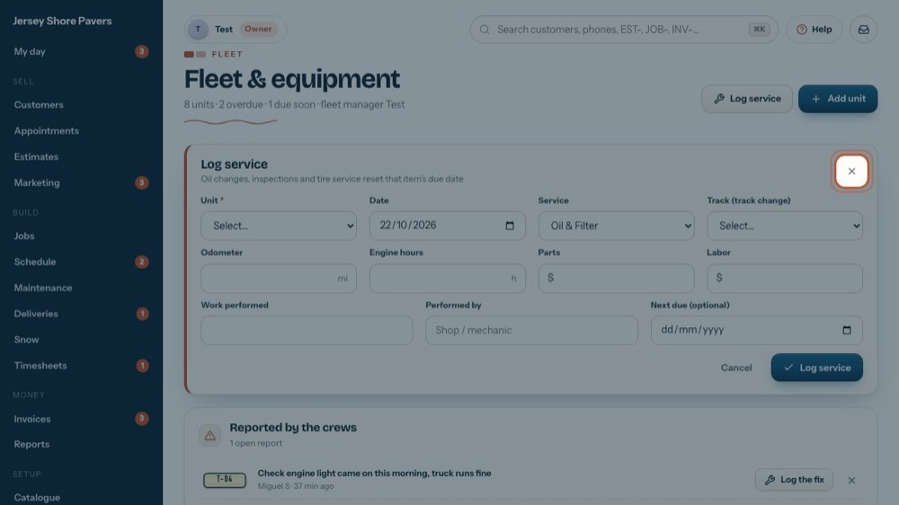
12Close the form
The tour closes it without saving.
-
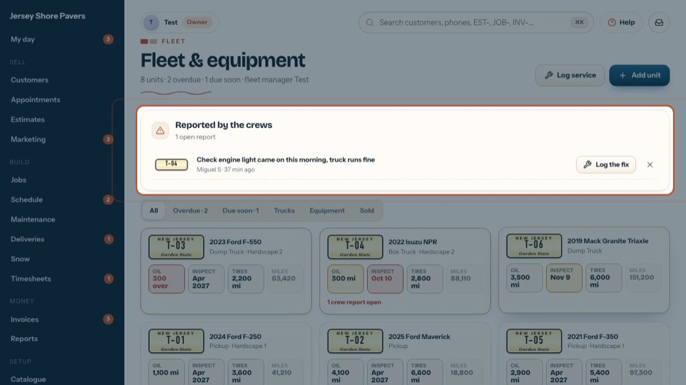
13A problem a crew reported
For a problem a crew reported from the phone, use its own button.
-
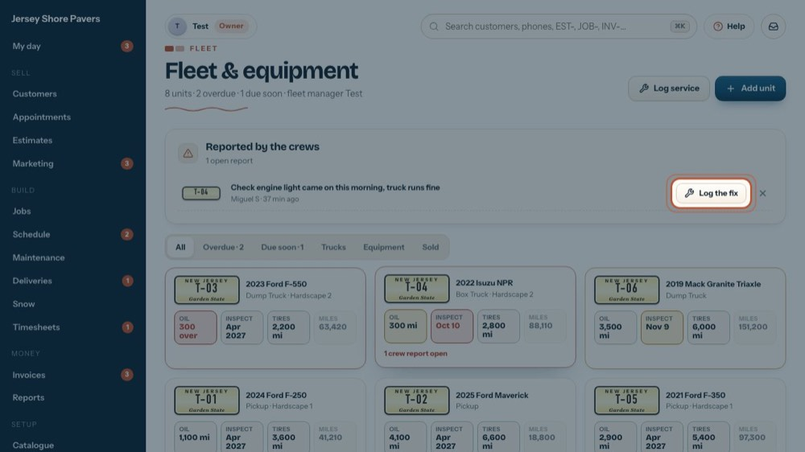
14Log the fix
Opens the same form for that unit…
-
15
The problem is filled in
…with "Fixed:" and the problem already written. Logging it closes the report.
-
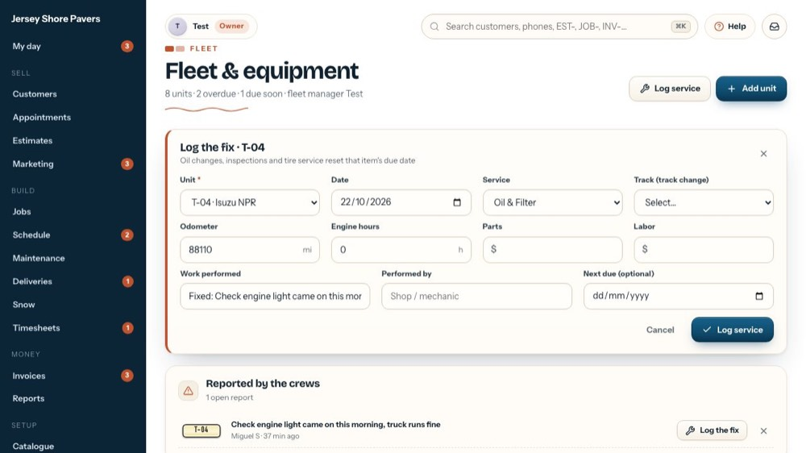
16Close it
The tour closes it without saving.